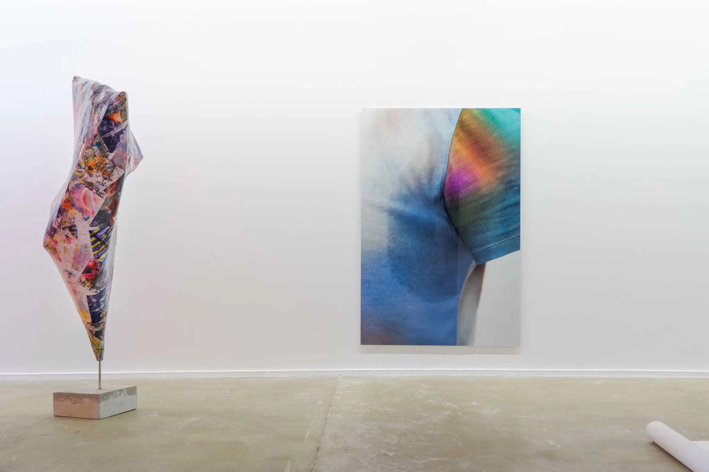

Tentacle Togetherness
Anouk Kruithof / 2023 / curating
Tentacle Togetherness brings together works produced by Anouk Kruithof over the past twenty years. The first monographic exhibition in France dedicated to this major artist, it assembles sculptures, photographs, videos, installations, books, and printed matter. Human and non-human entanglements, fluid identities, and the circulation of images form the core of the project. As its title suggests, the exhibition highlights a practice that unfolds in a tentacular way, through a continuous movement of openness, transformation, and relation-making.
Tentacle Togetherness rassemble des œuvres produites par Anouk Kruithof au cours des vingt dernières années. Première exposition monographique en France consacrée à cette artiste majeure, elle réunit sculptures, photographies, vidéos, installations, livres et imprimés. Les liens entre humains et non-humains, les identités fluides et la circulation des images en constituent le cœur. Elle met ainsi en lumière une pratique qui, comme son titre l'indique, se déploie de manière tentaculaire, dans un mouvement continu d'ouverture, de transformation et de mise en relation.
CPIF
https://anoukkruithof.com/?portfolio=tentacle-togetherness2023

Plurielle, la pratique d'Anouk Kruithof procède d'un mouvement irrésistible d'accumulation d'intuitions, de rencontres, d'images, de matières... Ses recherches se développent de façon tentaculaire, selon une logique de réseau dessinant un champ de réflexion aux frontières mouvantes. L'artiste s'intéresse notamment à la relation entre humain et non-humain, à l'environnement, au vivre-ensemble mais également aux états d'âme individuels, à la profusion d'images et à leurs usages. Autant de thèmes dont elle révèle l'interconnexion profonde.
À cette absence de cloisonnement fait souvent écho l'hybridation du medium. Sculptures à la « peau d'images » ou qui « transpirent », tirages-prothèses ou organiques, troublent les frontières acquérant un statut incertain. Polysémiques, ces pièces nous incitent à déconstruire les catégories sur lesquelles est bâtie notre pensée - telles que nature, culture, technologie - aussi bien qu'à interroger les notions de photographie et sculpture.
Le travail d'Anouk Kruithof intègre souvent une forte dimension collaborative. Un dialogue collectif se tisse alors en dehors de l'atelier, parfois même dans le monde virtuel d'Internet. Les participant·es sont ainsi appelé·es, de façon joyeuse, au partage et à la prise de conscience au sein d'un espace relationnel dépourvu de barrières.
Conçue comme une totalité organique, l'exposition Tentacle Togetherness témoigne d'une démarche foisonnante où les dimensions sensible et conceptuelle fusionnent. Animée par une énergie vitale débordante, elle esquisse l'horizon d'un advenir utopique, invitant un regard empreint d'un espoir curieux.